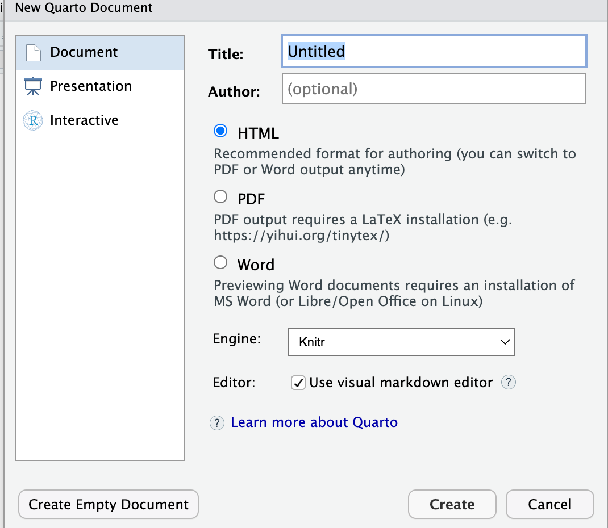
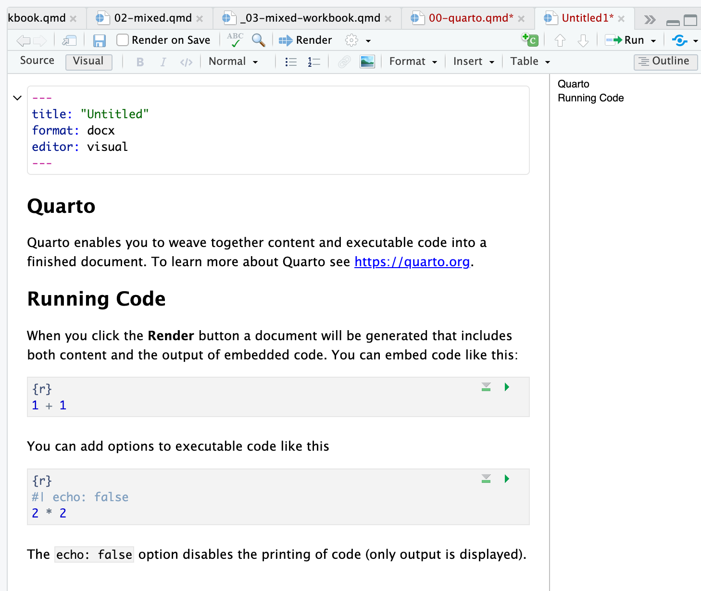
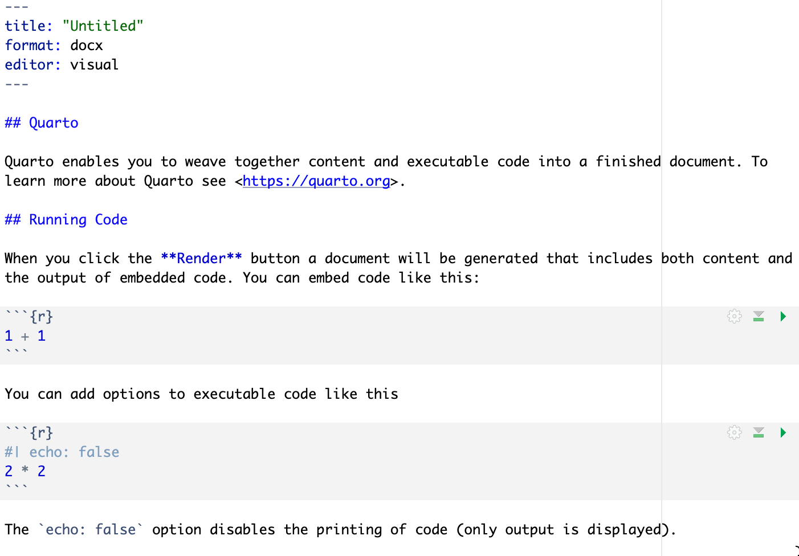
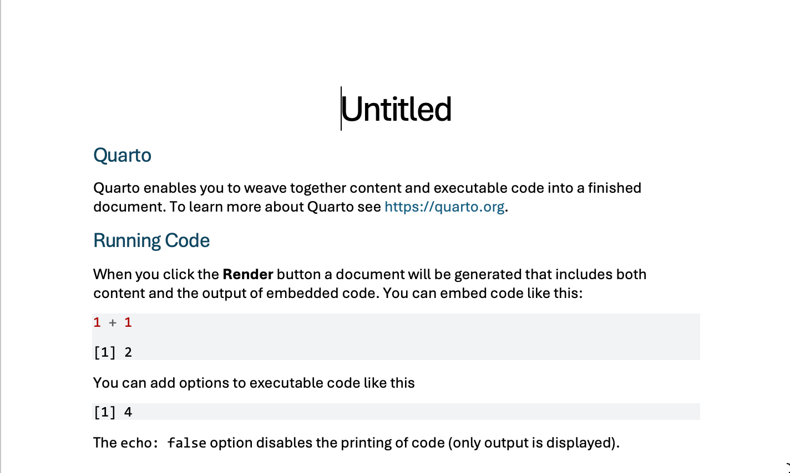

```{r}
#| label: example
1 + 1
```[1] 2Written by Rob Davies
I am sharing materials here to support the development of skills in producing reproducible reports using Quarto.
These materials should provide a quick entry to the what, why and how.
You can write in Quarto, in R-Studio (or any code editor), to produce:
Here, we are going to focus on reports that will be output as .docx.
What we are engaged in, here, is writing a combination of text and (here, R) code to generate a document.
This idea is old — see: e.g., Donald Knuth (who developed LaTex): https://www-cs-faculty.stanford.edu/~knuth/lp.html
But Quarto is a modern, efficient, way to do a powerful thing easily and efficiently.
Quarto was developed by Posit (formerly: R-Studio).
You can find the Posit guide to Quarto here:
https://posit.co/download/rstudio-desktop/
You need to do the installation in that order because R-Studio is the interface (an Interactive Development Editor (IDE)) but R does the work.
There are at least the following justifications for investing time in this (in no particular order):
Automate the boring stuff: figure, table or section cross-referencing; producing documents in different formats; generating bibliographies.
Make manuscripts or presentations or notes share-able: Quarto is free so removes barrier to entry presented by licensed software like MS Word.
Make nice things: plots and tables will look better.
Open R-Studio.
Click on the menu buttons:
File \(\rightarrow\) New File \(\rightarrow\) Quarto Document...Word radio button, and the Create button.
If you do that, you will see this file open:

.qmd fileRender button at the top of the window? Click on it.This action will create a Quarto script file, a .qmd and will generate a Word .docx.
The whole script looks like this:

.qmd file: dummy fileAnd the .docx looks like this:

.qmd file: dummy file outputThis example shows you the main parts of a Quarto file. Let’s identify these parts before we move on:
yaml at the top is where you set document options:---
title: "Untitled"
format: docx
editor: visual
---Usually, this will be where you specify what output formats you want, whether you want a ToC, and (for APA 7 documents) it will be where you add author, title and abstract information, see more information here:
https://quarto.org/docs/output-formats/ms-word.html
## QuartoNotice the ## – the more hash signs you add, the lower the section title in the section hierarchy.
Quarto enables you to weave together content and executable code into a finished document. To learn more about Quarto see <https://quarto.org>.The tick marks are at the top and bottom of the chunks tell R to read the code and work with it.
Notice that you can specify the identity (for cross-referencing) and the behaviour or appearance of the code at the top of the chunk.
In writing reports, we are often going to want to do tasks like:
We look at how to do these things next.
We will be working with an example data-set: click on the link to download the example data file.
study-one-general-participants.csvThe file has the structure you can see in the extract below.
| participant_ID | mean.acc | mean.self | study | AGE | SHIPLEY | HLVA | FACTOR3 | QRITOTAL | GENDER | EDUCATION | ETHNICITY |
|---|---|---|---|---|---|---|---|---|---|---|---|
| studytwo.1 | 0.4107143 | 6.071429 | studytwo | 26 | 27 | 6 | 50 | 9 | Female | Higher | Asian |
| studytwo.10 | 0.6071429 | 8.500000 | studytwo | 38 | 24 | 9 | 58 | 15 | Female | Secondary | White |
| studytwo.100 | 0.8750000 | 8.928571 | studytwo | 66 | 40 | 13 | 60 | 20 | Female | Higher | White |
| studytwo.101 | 0.9642857 | 8.500000 | studytwo | 21 | 31 | 11 | 59 | 14 | Female | Higher | White |
You can use the scroll bar at the bottom of the data window to view different columns.
You can see the columns:
participant_ID participant code;mean.acc average accuracy of response to questions testing understanding of health guidance (varies between 0-1);mean.self average self-rated accuracy of understanding of health guidance (varies between 1-9);study variable coding for what study the data were collected inAGE age in years;HLVA health literacy test score (varies between 1-16);SHIPLEY vocabulary knowledge test score (varies between 0-40);FACTOR3 reading strategy survey score (varies between 0-80);GENDER gender code;EDUCATION education level code;ETHNICITY ethnicity (Office National Statistics categories) code.Download and read the data into the R environment.
Rows: 169 Columns: 12
── Column specification ────────────────────────────────────────────────────────
Delimiter: ","
chr (5): participant_ID, study, GENDER, EDUCATION, ETHNICITY
dbl (7): mean.acc, mean.self, AGE, SHIPLEY, HLVA, FACTOR3, QRITOTAL
ℹ Use `spec()` to retrieve the full column specification for this data.
ℹ Specify the column types or set `show_col_types = FALSE` to quiet this message.Let’s take a look at the distribution of ages in this sample.
You can do that by examining a histogram, see ?@fig-example-histogram.
You can embed the code that does that work, together with your text, in a chunk like this:
In practice, unless you are teaching, or sharing your workings as part of your documentation, you are going to want to embed a chunk of code to produce a plot so that the plot is presented in your output document while the code chunk that does the work is invisible (at output).
You may also want to add a figure caption and alt-text, and you will want to manipulate figure dimensions.
We can learn how to do that stuff while producing a scatterplot, next.
Let’s do something a little fancy, see ?@fig-ggextra-demo-non-eval.
To produce the plot, you will need to have installed the {ggExtra} library.
Let’s go through the control elements first.
Take a look at the chunk of code:
# -- note that can use gridExtra
# -- to show marginal distributions in scatterplots
# https://github.com/daattali/ggExtra
plot <- study.two.gen %>%
ggplot(aes(x = HLVA, y = mean.acc)) +
geom_point(size = 1.75, alpha = .5) +
geom_smooth(size = 1.5, colour = "red", method = "lm", se = FALSE) +
xlim(0, 15) +
ylim(0, 1.1)+
theme_bw() +
theme(
axis.text = element_text(size = rel(1.15)),
axis.title = element_text(size = rel(1.5))
) +
labs(x = 'Health literacy (HLVA)', y = 'Mean accuracy')
ggExtra::ggMarginal(plot, type = "histogram", colour = "lightgrey", fill = "lightgrey")Notice the bits of text at the top of the chunk:
#| label: fig-ggextra-demo-non-eval labels the chunk. You need this for figure referencing.#| fig-cap: "Scatterplot showing the potential association between accuracy of comprehension and health literacy" adds the caption that will be shown next to the plot.#| fig-alt: "The figure presents a grid of scatterplots indicating the association between variables mean accuracy (on y-axis) and health literacy (x-axis) scores. The points are shown in black, and clustered such that higher health literacy scores tend to be associated with higher accuracy scores. The trend is indicated by a thick red line. Marginal histograms indicates the distributio of data on each variable." adds alt-text describing the plot for people who use screen readers.#| warning: false stops R from producing the plot with warnings.#| echo: false stops R from showing both the code and the plot.#| eval: false here stops R from actually running the code.#| fig-width: 4.5 adjusts figure width.#| fig-height: 4.5 adjusts figure height.You can see that I have added comments: # -- note that can use gridExtra to make the chunk self-documenting.
Now show the plot: Figure 1.
You can read more about chunk options here:
https://quarto.org/docs/computations/r.html#chunk-options
Note that the figure reference is computed by Quarto:
#| label: fig-ggextra-demo-eval (notice the grammar fig-...)@fig-ggextra-demo-eval then R will link the two objects, and write the reference in the rendered document.